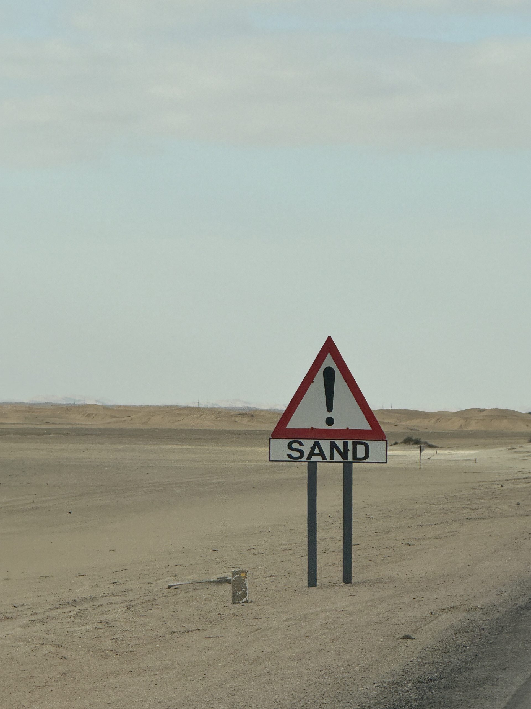

GlobalSemester
In fall of 2024, I went on Global Semester. Here is a recap of the entire program and purpose in each country.
What is Global Semester?
Global Semester is an annual fall study abroad program at St Olaf College providing twenty students with opportunities to develop insight into cultures around the world and their social, political, and economic contexts through the combination of course structure, experiential learning activities, and engagement with communities.
Follow our Instagram!!! @gallivantwithglobal
During Global Semester, 20 students take one course in each country, as well as an overarching course taught by St Olaf faculty.
Coursework
The Ethics of Study and Service Abroad
In The Ethics of Study and Service Abroad we will explore the complexities and ethical dilemmas related to studying abroad, global experiential learning, and the desire to serve people abroad. Throughout our extended stays in each country, our study will be guided by questions like the following: When studying abroad, how can we learn from or with other people and places in the world in an ethical, non-exploitative way? How can service be an ethical part of study abroad? What ethical issues are present in teaching abroad contexts?
Environmental Sustainability in Costa Rica
This course will use the United Nations Sustainable Development Goals as a critical lens for examining sustainable development in tropical regions, using the case study of Costa Rica—a country renowned for its leadership in land protection, reforestation, high educational attainment, and progress toward gender and racial equality. Costa Rica has been a global leader in conserving its lands/water systems and is emerging as a leader in addressing how to ensure sustainable development and management systems. This program will immerse you in efforts to create a green, circular, and sustainable economy in Costa Rica.
Economic Reform and Development in Vietnam
This course charts Vietnam’s transition from a centrally planned to a market-oriented economy and the associated socio-political changes as well as environmental costs. Students examine in detail the major turning point in Vietnam’s economic development the Doi Moi “Renovation” economic reforms launched in 1986 – and the rapid growth in trade and investment since that time. The course additionally examines development ethics and equity issues within the context of the country’s growing market economy and the urban consumer class.
My Blog Post
Here is the blog post I wrote for my main assignment during global semester. This was during our excursion in Swakopmund, Namibia

Hello, welcome to the blog. This week was busy, so if you don’t have time, here’s a TL;DR: We heard from several speakers on the historical context of Namibia, including the Namibian Genocide, drove around Walvis Bay and Swakopmund with lots of sand dunes, and met wild seals face-to-face. There was lots to talk about this week!
On Wednesday we started with a tour of the Namibian Parliament building. Parliament here is similar to the U.S. in that two bodies determine the laws: the National Assembly and National Council. The assembly is the main lawmaking body, while the council reviews laws and sends back recommendations of what to fix, which the assembly doesn’t even have to listen to. Parliament here strongly focuses on youth politics, with the youngest member presiding and many other related organizations like the National Youth Council.
In the afternoon, we started learning about the Namibian Genocide with a documentary and a discussion with Dr. Elison Tjirera. Most of us had never even heard about the events that occurred here and were shocked at what atrocities occurred. The German army and leadership were focused on expansion in the early 1900s and would do anything to claim more land. They forced the local Nama and OvaHerero tribes into a desert and kept them starving without food or water. Later, they made concentration camps for the people that remained. We also discussed how Swakopmund is now a “little Germany,” which I’ll discuss later in the blog.
Before we headed to Swakopmund, we had two more speakers- JP Van de Westhuizen and Shane from the Namibian Ministry of Environment, Forestry, and Tourism. We learned from JP that the core of the genocide was the need for land, reiterating what we heard in the documentary. Today, land is split very unequally in Namibia. About half of the land in Namibia is privately owned, and of that half, 70% is owned by white people. This problem isn’t being fixed soon as the leading party, SWAPO, is very slow at land resolution, having only 25 completed resolutions out of 176 needed over the last 6 years.
As for hunting, it gave us a new understanding of game hunting in terms of a sustainable way of doing it. Namibia has systems of expensive permits with many years of training to legally hunt big game like elephants. Poaching does occur, which is hard for patrollers as they cover over a million hectares of land with only 14 guards patrolling.
The next day we headed to Swakopmund! Finally, a place without 5,000+ feet of elevation. I’ve never appreciated oxygen-rich air and the ocean breeze as much.
We enjoyed lunch by the coast, climbed some rocks, and made seagull sounds before we heard from our next guest speaker and tour guide, Laidlaw Peringanda, with a historical tour of Swakopmund.
After watching the documentary earlier in the week, I imagined a city from the far past with old monuments symbolizing oppression and powerful regimes. In Swakopmund, they were standing right in the center of the town. We saw monuments to the dead German soldiers during the genocide, German statues commemorating the soldiers that died during WW1 and WW2, and heard about stores that sold Third Reich merchandise down the street.
Next, we went to the Swakopmund cemetery, which scared me about how different the graves of the Nama and OvaHerero tribes were treated to those of the Germans. You can see in the pictures below that the German graves are surrounded by lush greenery, fancy engravings, and a sign that translates to “They gave their lives for you.” The graves here are looked after by the local council and cleaned often.
On the other side (in the same cemetery not even 200 feet away), you see the Nama & OvaHerero Genocide monuments with sand mounds in the background. These mounds are the mostly beheaded remains of those killed in concentration camps from hunger, intense labor, and more at the hands of German soldiers. Bodies were beheaded so that the Germans could study skull anatomy differences. The Lenz Company’s concentration camp alone (yes, companies owned labor camps for free labor) reported over 1300 deaths due to physical exhaustion.
These graves are unkept by authorities, leaving relatives and volunteers to restore the graves every 4 months just to avoid body parts surfacing from the sands. Many of these volunteers get nightmares and trauma from this service. Additionally, the sign of the monument was only changed in 2020 (4 years ago!!!) to change the cause of mass death from “mysterious circumstances” to dying of starvation, labor, sexual abuse, disease, fatigue, and adverse weather conditions.
Even worse, the government doesn’t care. Housing developments have encroached on the cemetery. During remembrance services for the genocide, local officials were seen going back to German graves to pay their respects. Even street sign changes that removed the names of old important German people have been branded on buildings to maintain the names in the community. It simply is an issue around little international pressure to pay reparations or recognize the atrocities they committed since it is merely Germany vs Namibia. As Dr. Tjirera put it earlier, the Germans don’t believe their lives are meaningful enough to care.
On Saturday, we headed to Walvis Bay to talk with a member of the Municipal Council about housing and development issues within the town. He stressed that Namibia had little to export and had to import most of its resources, with Walvis Bay being the country’s main port city. Housing development resources were scarce, leaving many people without homes. We saw this with metal shacks built in backyards homeowners use as “guesthouses” that people rent for decades.
He also discussed the development issue surrounding large malls taking business from the central business district. As an economics major going into a commercial real estate field, it was interesting to connect my experience in a place without U.S. laws to how life is for people without large apartments or tall developments. Apartments here form around a central “resource” building, with small homes surrounding it.
After a long few days of learning, we had to end it with some fun outdoor activities that took up the rest of the weekend. We got to climb Dune 7, look out over several sand dunes into the ocean, and recreate the dune movies, making Paul our new Paul Atreides. We had to climb up the entire dune using our hands and feet, making every part of our body sore. It was all worth it at the top with several amazing photos and the chance to jump and run back down the dune.
We also got to go dune buggying back in Swakopmund! We got our own dune buggies and followed in a line cruising over and around the dunes. We all got to go super fast and feel the wind rush by us as sand hit our visors.
Sunday was the best day yet. When we first got to Namibia, we were surprised with a kayaking trip with Catamaran Cruises, but we didn’t know about the seal and pelican tour that came with it!
From the moment we started, seals were climbing on the dock and coming inches away from all of us. They were scary initially, but we learned they just wanted the fish the guides fed them. Some of us even got to feed the seals and got attacked by pelicans.
When we got to the other side of the bay, we started kayaking. Paul and I were a great duo, beating almost every pair of Globies in races (Fiona and Eva won every time).
After that, we enjoyed a great lunch on the bay, and a small group of us went camel riding. Most of us had never ridden horses before, so we didn’t know any technique when riding them (it hurt a lot). Luckily, Fiona helped us with some technique since she did some horse-riding before.
Thanks for reading! We’ve been on global for so long and still have so much left to learn and do, but it feels like it is going by so fast. It’s good since we are all enjoying ourselves, but I hope our second half doesn’t go by too fast.
Yahya chouhada,
Jean-Luc